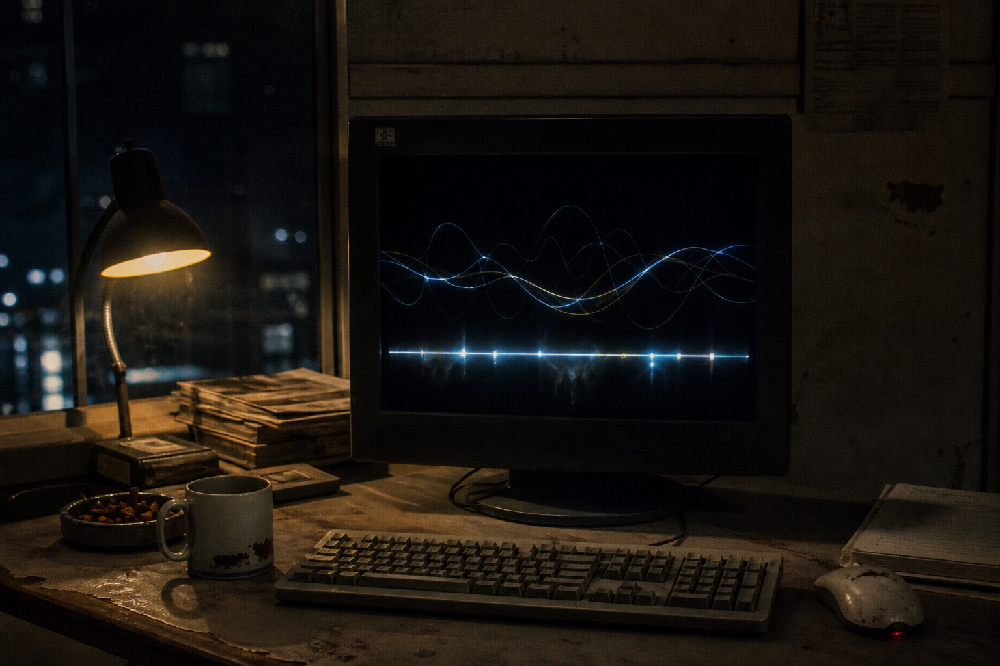

Tonight’s usable bleed-over is cut into eight slots. Green bars are the FM head in the hall. The greyer ones are empty-frequency hiss. Click a slot to get a transcript. The machine will not play original audio for you.
Before 22:00 Ji Lengshan was doing a sound check. The axis is almost empty. No slot of its own. After 23:40 the hall is noisy. The tuner only bites one more scrap of phone hiss.
The same second can stack two mouths. The transcript marks the overlay in square brackets. Do not write the person in brackets as present. I got that wrong once.
Bar length only means how long the cut is. Not who is in the wrong. Click 22:14 first. That close-mic is the easiest place to hear a self-name as arrival. The waveform has no words. The machine only cuts. Someone typed the transcript after looking at the green bar.